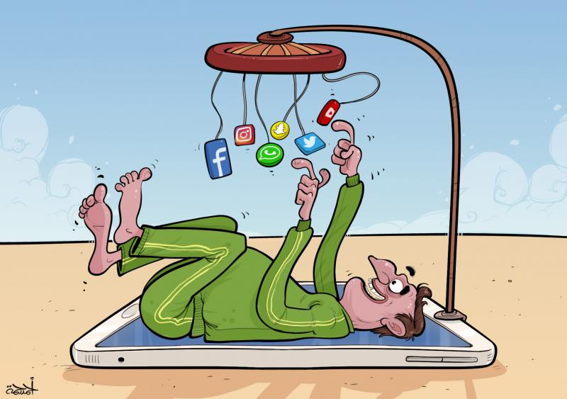
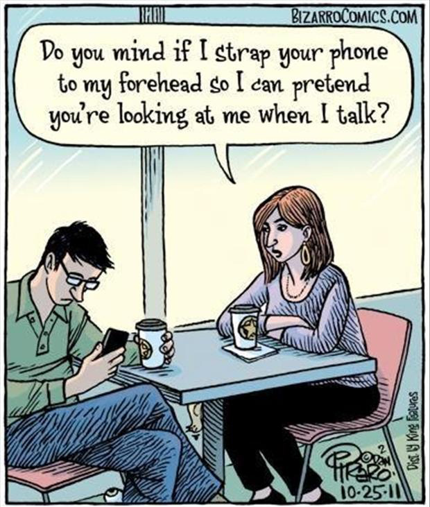
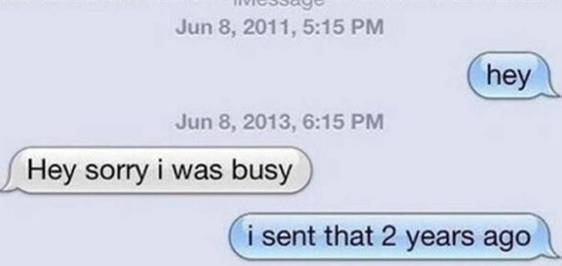
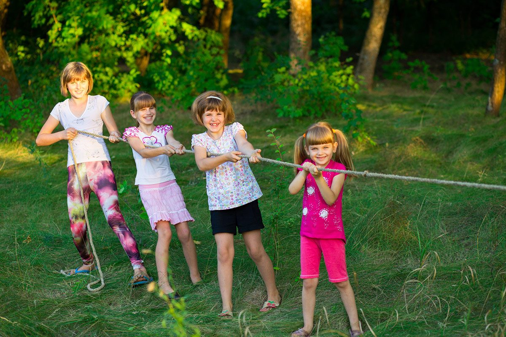
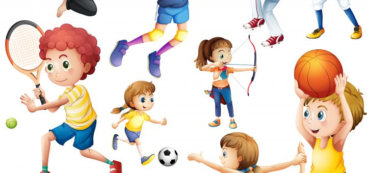
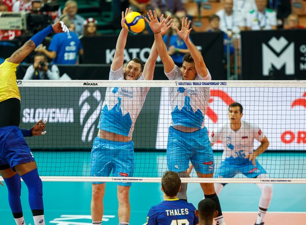
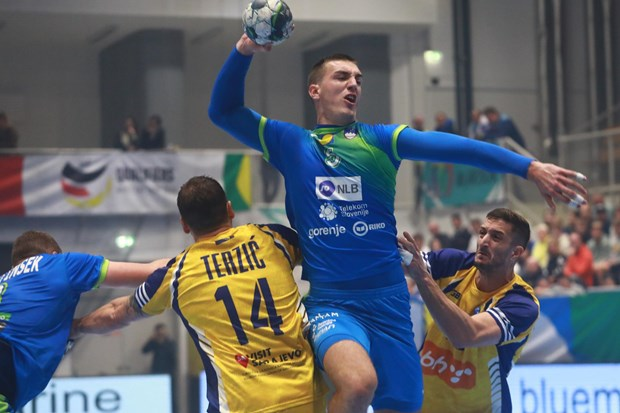
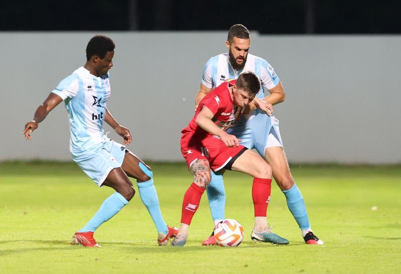

NIČ NI NAROČE, ČE BOŠ KAJ ZAMUDIL
Naj te ne bo strah, da boš kaj zamudil, če boš telefon za nekaj časa izpustil iz rok. Prav nasprotno, tega se lahko veseliš, saj ti bo resnično koristilo. Zavedaj se, da je tvoja uporaba telefona morda prekomerna in da to lahko predstavlja težavo.
NEKAJ PREDLOGOV, KAKO SI LAHKO POMAGATE:
- SPREMLJAJ SVOJO UPORABO TELEFONA. Lahko si zabeležiš, koliko ur si vsak dan uporabljal mobilni telefon. Postavi si omejitev in se je poskusi držati. Ko se boš trudil omejiti uporabo telefona, ne razmišljaj o tem kot o odrekanju ampak o tem, da nudiš oddih svojim možganom, ki so utrujeni od nenehnega brskanja po telefonu.
- NI SE TI TREBA TAKOJ ODZVATI NA VSAKO SPOROČILO Če ljudje od tebe to pričakujejo, poskusi znižati njihova pričakovanja, tako da počakaš nekaj minut, preden odgovoriš na sporočilo. Ljudje se bodo hitro navadili, da tudi če ne boš odgovoril nekaj ur, ne bodo užaljeni in bodo vedeli, da imaš tudi druge obveznosti in ne preživljaš svojega celotnega prostega časa s telefonom v roki.
- ugotovite, ob katerih sprožilcih imate največjo potrebo po uporabi telefona,
- poskrbite, da se z bljižjimi čim bolj pogosto družite v živo,
- določite si točen čas v dnevu, ko lahko telefon uporabljate in čas, ko telefon izklopite (npr. med delo ali zvečer),
- določite, v katerih prostorih telefona ne boste uporabljali (npr. v spalnici),
- poiščite si zabavne aktivnosti, pri katerih ne boste uporabljali telefona,
- redno spremljajte svoj čas, ki ga preživite s telefonom in ga analizirajte.



KAKO LAHKO DRUGAČE PREŽIVIŠ DAN, BREZ TELEFONA:
- raje vzemi žogo in pojdi na igrišče,
- pokliči prijatelja in pojdita na bljižnji hrib
- vpiši se v glasbeno šolo
- vpiši se na kakšen šport, ki te veseli in bi ga rad igral


  